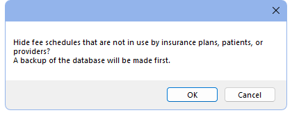

Fee Schedules
Create different Fee Schedules to enter various procedure fees for UCR, insurance, and more.
In the Main Menu, click Setup, Fee Schedules.

Alternatively in the Procedure Codes list, click Fee Scheds.
Typically, offices create fee schedules for Usual, Customary, and Reasonable (UCR) fees and for each insurance company they are contracted with. A fee schedule can allow a single (global) fee per procedure, or allow provider and/or clinic-specific fees. Users must have the Edit Fee Schedule Permission to access the Fee Schedules window.
Helpful links:
- See Fee Schedule Logic for an explanation of how a patient's Fee Schedule is determined
- See Procedure Codes for information on entering fees and editing procedure codes.
- See Fee Tools for information on copying Fee Schedules and editing fees.
- See Procedure Codes - Fee Schedules Report to print a Fee Schedule.
- See Provider to assign the default Fee Schedule to the provider. Each provider can have their own default Fee Schedule if needed.
Filter or edit the Fee Schedules list:
- Type: Filter the list by fee schedule type.
- Show Hidden: Check to show fee schedules marked as hidden.
- Up/Down: Reorder the fee schedules. Select a fee schedule, then click Up or Down to move it.
- Set Order: Quickly move a fee schedule. Highlight a fee schedule, click Set Order, then select the spot in the list to move the fee schedule.
- Sort: Quickly sort the Fee Schedules list alphabetically by type. All Fee Schedule types must be selected to use.
- Add: Create a new fee schedule. Opens Edit Fee Schedule. See the subsequent section for additional information.
- Clean Up Allowed: This button is only visible to users with the "Security Admin" Permission. Use it to delete out-of-network fee schedules that are not being used or are attached to hidden insurance plans.
- Hide Unused: This button is only visible to users with the Security Admin permission. Hide fee schedules are that not in use. See the subsequent section for details.
- Go (Check Ins Plan Fee Schedules): Opens the Check Insurance Plan Fees tool. Use the tool to check if insurance plans have the correct fee schedules attached and reassign fee schedules for multiple insurance plans at once.
Edit Fee Schedule
Click Add to create a new Fee Schedule or double-click an existing Fee Schedule to edit.

- Description: Enter the name of the fee schedule.
- Type: Select the fee schedule type. See Insurance Plan Types for more examples of when to use each type.
- Normal: In-network contracted fee schedule. These types of fee schedules are options in the Fee Schedule dropdown on an Insurance Plan.
- CoPay: A set fee schedule indicating the amounts a patient is responsible for per procedure. Copay fee schedules can work in conjunction with percentage-based plans. This type can be set in the Patient co-pay amounts dropdown on an insurance plan.
- To treat blank entries in a copay fee schedule as $0 patient copay, enable Copay fee schedules treat blank entries as zero in Preferences.
- To treat blank entries as 100% copay (e.g., not covered by insurance), disable the Copay fee schedules treat blank entries as zero preference.
- Out of Network: A fee schedule for fees allowed by insurance, even if the office is not contractually obliged to follow them. These types of fee schedules are available in the Out of Network (old) dropdown of an insurance plan.
- Can be used if Blue Book Feature is disabled or when using Legacy Blue Book. If using Blue Book, use a Manual Blue Book fee schedule type instead.
- Out-of-network fee schedule entry can be automated when using the Legacy Blue Book feature.
- When computing estimates, all percentages are based on this out-of-network amount instead of the procedure fee.
- To treat blank entries as $0 insurance estimate, enable the preference Out of network fee schedule treat blank entries as zero.
- To prevent blank entries from changing insurance estimates, disable the preference Out of network fee schedule treat blank entries as zero.
- FixedBenefit: A fee schedule from insurance where they pay a fixed amount for each procedure code. This fee schedule is an option for PPO Fixed Benefit Insurance Plans only.
- To treat blank entries in a fixed benefit fee schedule as $0 insurance coverage (e.g., 100% patient portion), enable the Fixed benefit fee schedules treat blank entries as zero preference.
- To treat blank entries in a fixed benefit fee schedule as 100% insurance coverage (e.g., $0 patient portion), disable the Fixed benefit fee schedules treat blank entries as zero preference.
- ManualBlueBook: The known allowed fee for an insurance plan, even when the office is not contractually obligated (i.e., out-of-network). Use when Blue Book is enabled. This is set in the Manual Blue Book dropdown of an insurance plan.
- If Blue Book is disabled or Legacy Blue Book is enabled, use an Out of Network fee schedule instead.
- Hidden: Hide the fee schedule. Users are prompted if attempting to hide a fee schedule that is in use. Insurance plans that have a hidden fee schedule attached act as though no fee schedule is attached instead.
- Use Global Fees: Set whether the fee schedule only allows a single (global) fee per procedure, or allows Fee Overrides for Provider or Clinic.
- Checked: Only allow a single fee per procedure.
- Unchecked: Allow provider and/or clinic specific fees per procedure. This box can only be changed when the logged-on user has the Provider Fee Edit permission and, if Clinics are enabled, Headquarters is selected in the Main Menu.
Hide Unused
This tool marks any fee schedules that are not in use as hidden.
Before running the tool, the user is alerted that a backup of the database will be made. This may take a while.

Click OK to proceed. Any fee schedules not used by insurance plans, patients, providers, or discount plans are hidden.